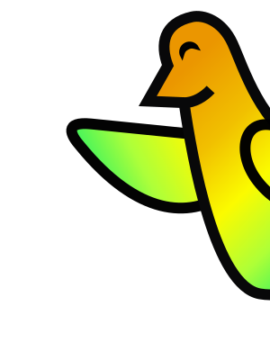

API REQUEST: ON DEMAND
WHEN A CUSTOMER OPENS THEIR BOOKING
request
payment status?
response
paid
THE CUSTOMER SEES
The booking screen shows it as paid.

WEBHOOK: REACT TO AN EVENT
WHEN A PAYMENT SUCCEEDS
request
payment succeeded
response
got it
THE CUSTOMER GETS
A booking confirmation, without anyone asking.